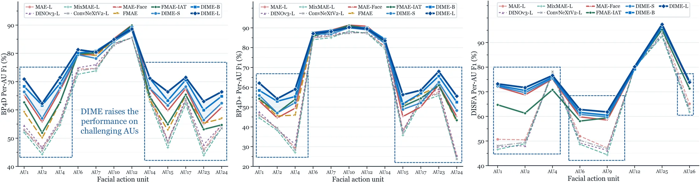
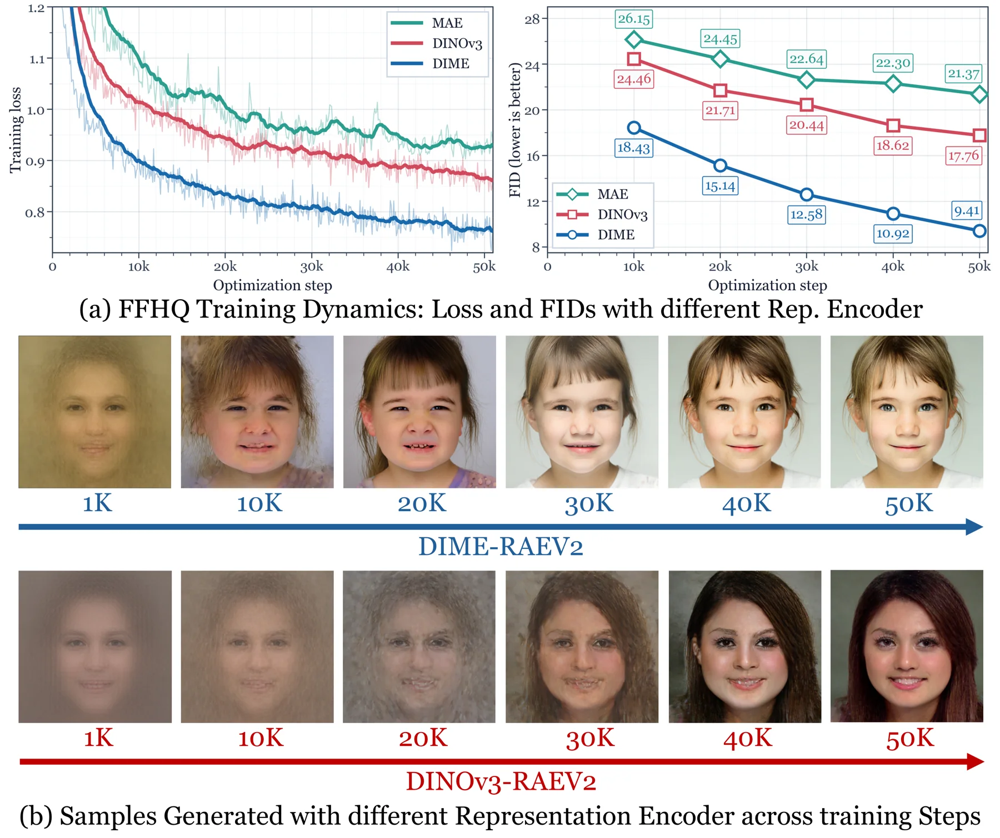

01
Same-identity pairing
Two distinct observations share person-specific appearance. Identity is used only to organize pairs, never as a network input or prediction target.
Scaling Self-Supervised Facial Representation Learning via Differential Masked Autoencoding
A face is more than an identity. DIME learns from two observations of the same person, making their subtle differences an explicit training signal.
Conventional masked autoencoding reconstructs one image at a time. As pretraining grows, it can learn more appearance without becoming more sensitive to the small changes that matter for expression, action units, and geometry.
DIME pairs distinct observations of the same person. Shared morphology becomes a controlled reference, so the learning target exposes changes in facial state rather than differences between people. The two images are recovered from reciprocal masked mixtures, and their reconstructed difference is supervised directly.
See how differential learning worksFrom predicting what a face looks like to preserving how it changes.
A masked autoencoder redesigned around facial variation.
Two distinct observations share person-specific appearance. Identity is used only to organize pairs, never as a network input or prediction target.
Complementary patch mixtures pass through a shared encoder. Source-isolated attention prevents one observation from leaking the other's missing content.
EDDS aligns the direction of local changes between the reconstructed pair and the original pair, alongside RGB and gradient-orientation recovery.

On fine-grained facial tasks, DIME keeps improving as data grows where conventional MAE begins to plateau.
face images in Face-20M
macro F1 with DIME-L
average HTER with DIME-L ↓ lower is better
FID at 256px, RAEv2, 100K steps ↓ lower is better

From 6M to 20M pretraining images, BP4D mean F1 rises from 66.1% to 72.0% for DIME-B. MAE-B moves from 64.5% to about 65.0% in the same range.
The learned variation transfers across seven evaluated task families, from dense facial geometry to generative modeling.

DIME's gains concentrate on challenging action units rather than only those with already high scores.
Differential supervision organizes features around local facial regions and sharper spatial boundaries.

A supplied visual demo brings facial geometry, parsing, and action-unit analysis together on a moving face.
As a representation encoder for RAEv2 and REPA, DIME improves convergence and final face-generation quality. At 100K RAEv2 steps, DIME-L reaches FID 6.12 at 256px and 6.59 at 512px.


DIME: Scaling Self-Supervised Facial Representation Learning via Differential Masked Autoencoding
The linked repository is the one named in the paper; consult it for the latest release status.